IAA RESEARCH · LEVEL PRESSURE / FAILURE LOOP / REWARDED AD
三款箭头解谜的
IAA 对比拆解
三款产品都把“点箭头、清空棋盘”做成核心，却把广告放在完全不同的位置。本文用 20×3 实机、60 张截图和 Google Play 美区快照，拆开它们的难度压力、失败恢复、道具经济与留存结构，回答一个问题：IAA 什么时候是在帮玩家继续玩，什么时候只是在收过路费。
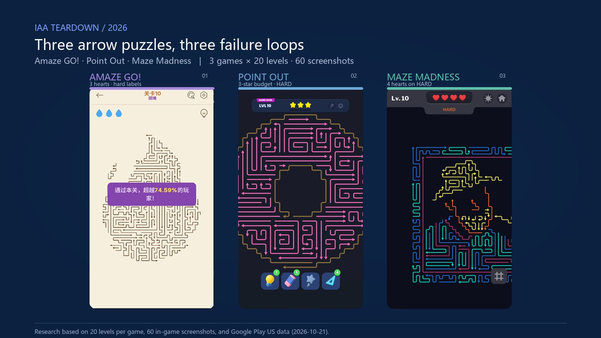
00 摘要：同一品类，三种“失败之后”
三款产品的表层规则几乎相同：点一支箭头，让它沿指向飞出；路径被挡住就扣资源；清空棋盘过关。真正拉开差距的，是失败之后玩家看到什么。这决定了广告是在“接住”玩家，还是在“拦”玩家。
| 结论 | Amaze GO! | Point Out | Maze Madness |
|---|---|---|---|
| 难度压力 | 强 困难/超难有明确标签，整板换形 | 中 主要靠箭头变多、图案变大 | 中 与 Point 同曲线，用加心补偿 |
| 失败恢复 | 3 心打空，免费继续 +3 心 | 3 星打空，广告 / 900 金币 / IAP | 心打空，广告 / 300 金币，也可直接重开 |
| 广告位置 | 玩家主动点灯泡才看，给的是“哪支能点” | 失败后的 Out of Stars，补星才能继续 | 失败后的复活面板；但重开免费 |
| 经济自洽 | 无金币经济；提示广告不挡进度 | 29 关约 700 金币，三件套 900 起 | 20 关约 230 金币，复活一次 300 |
| 长期目标 | 青铜联赛、金箭头排位，单关表现有去处 | 分段 Zone、3 星收集 | L20 解锁每日挑战、深浅色主题 |
研究口径
| 项目 | 说明 |
|---|---|
| 实机范围 | Amaze GO! 1–20；Point Out 1–20（继续到 L21）；Maze Madness 1–20（继续到 L21）。每关至少一张截图，共 60 张。 |
| 运行环境 | Amaze：Google Play Games PC（crosvm 客户区）；Point / Maze：MuMu Player 12（720×1280，ADB 截屏）。 |
| 截图方法 | 1.2 秒轮询录制，按 PNG MD5 去重；按 HUD 关卡号 OCR 校验后选帧。截图来自实机，不使用商店图替代。 |
| 商店数据 | Google Play 美国区 / 英语，2026-10-21 抓取；评分、下载、价格为商店展示值；数据安全为开发者申报。 |
| 边界 | 没有后台数据，广告频次与 eCPM 不可见；Maze 的误触保护未单独验证；Point/Maze 的金币与价格部分来自本人口述，能与截图对上的已标注。 |
IAA 观察框架：从压力到回流
关卡压力
难度、资源、读图成本共同决定玩家会不会失败。
失败瞬间
0 心 / 0 星之后，玩家看到的是“继续”还是“墙”。
恢复选项
免费继续、看广告、花金币、内购，还是直接重开。
广告 / 道具
广告是解决当下问题，还是只增加一次曝光。
回流
单关结果能否接进排位、收集或下一关目标。
后文的每一节，都按这五步拆三款产品；评分卡只做研究判断，不代表产品后台数据。
01 品类与难度压力：先让玩家“看懂自己在爬坡”
箭头解谜天然适合 IAA：单局短、失败清楚、可重复。但“适合放广告”不等于“适合在失败时收费”。先看三款怎么制造压力。
1.1 难度标签与资源
| 维度 | Amaze GO! | Point Out | Maze Madness |
|---|---|---|---|
| 难度标签 | L5/8/10/13/15/18 困难，L20 超难 | L10/16/20 HARD，L18 SUPER HARD | L10/15 HARD，L20 SUPER HARD |
| 单关资源 | 3 心固定 | 3 星硬预算 | 普通 3 心；HARD 4 心；SUPER HARD 5 心 |
| 高难关做法 | 整板换形：L5 眼镜板、双指缩放；后续更长回形 | 箭头变多、图案变大；标签与玩法变化不完全对应 | 与 Point 同曲线；用加心降低失败率 |
| 读图辅助 | 灯泡提示（广告）＋可点数量信息 | 灯泡 / 橡皮 / 魔法棒 / 尺子；双指缩放 | 尺子/基准线常驻免费；深浅色切换 |
| 节奏感 | 普通—困难交替，压力有起伏 | 前 20 关偏平，难度主要靠加量 | 与 Point 类似，靠心数补偿 |
1.2 二十关的难度节奏
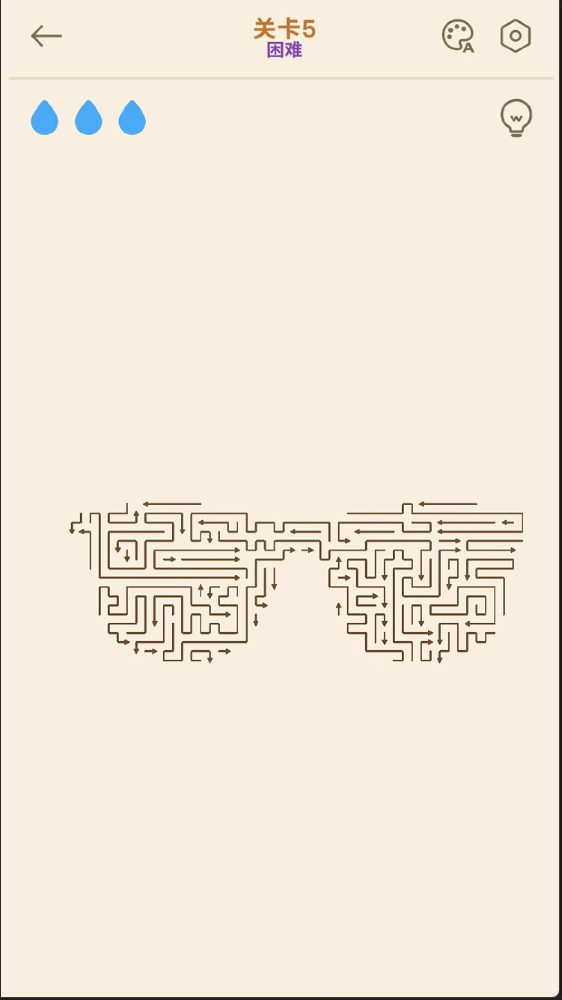
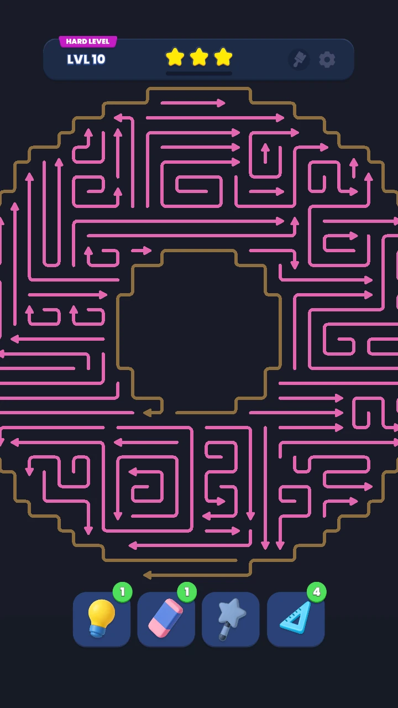
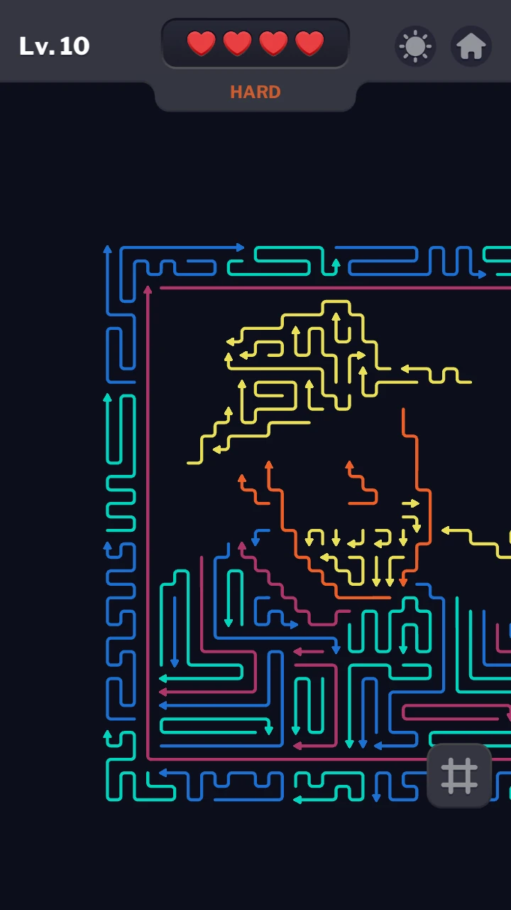
判断：Amaze 的压力曲线最可读，困难关有“换题”的感觉；Point 与 Maze 更多是同一套题变复杂。Maze 加心是聪明的低成本补偿，但它没有改变“量变”的本质。
02 失败与恢复：IAA 最关键的一秒
三款都在资源耗尽时把玩家拦下来，但给出的下一步完全不同。这里不是“有没有广告”的区别，而是广告是否解决了玩家当下最想解决的问题。
2.1 Amaze：免费继续，广告退到“主动求助”
Amaze 每关 3 颗蓝心。点错扣 1 心，但同一支错箭头只扣一次，动画期间再点不会继续掉。3 心用完弹“次数用尽”，可以免费继续 +3 心，或重新开始；没有强制广告。
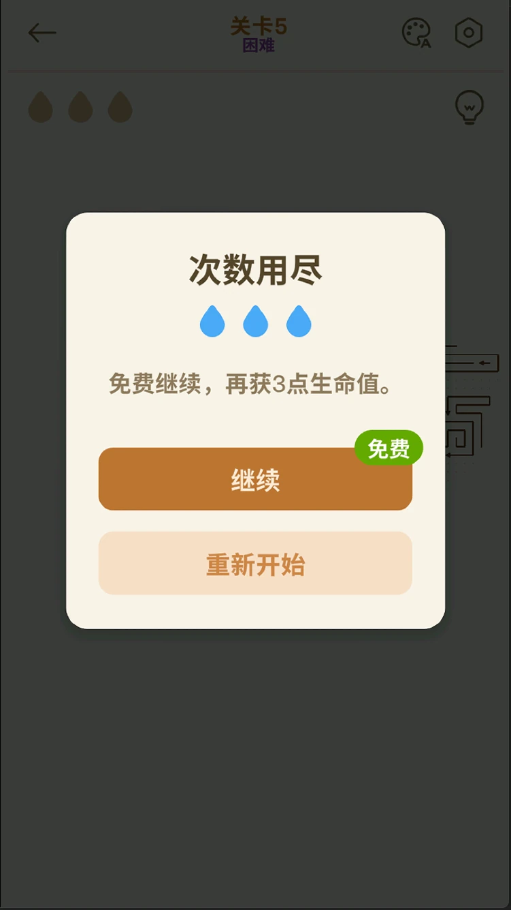
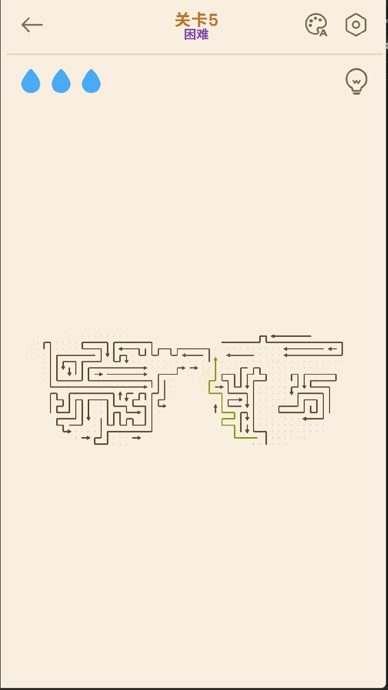
这套设计的价值在于：失败只是“再来一次”，广告只在玩家主动点灯泡时出现。广告没有抢走失败瞬间，也没有替玩家做决定；它卖的是信息，不是通行证。
2.2 Point Out：0 星墙，补星才能继续
Point 每关 3 星，0 星立即弹 Out of Stars：看广告 +1 星、900 金币 +3 星，或买 Safety Net。补星后才能继续。更麻烦的是它没有误触保护：同一支错箭头在动画期间再点会再扣一次，手速快的人可能一次误判连掉 3 星。
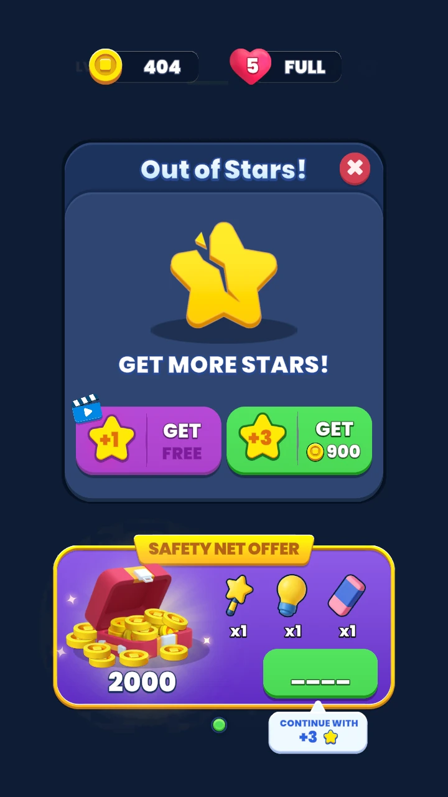
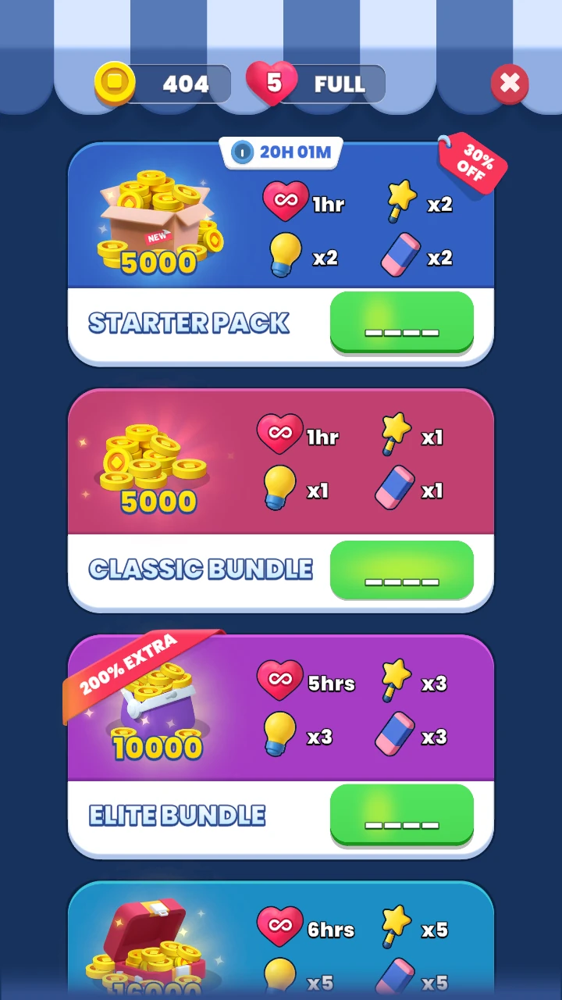
Point 的失败不是“操作没做好”，而是“资源预算打完了”。这会把一次误点放大成付费问题；尤其在 0 星面板里，广告和金币是并列的，玩家很难不觉得自己被拦住了。
2.3 Maze：复活 300 金币，但重开免费
Maze 的复活面板给出两条路：看广告，或 300 金币。问题是金币产出很低：过一关 10 金币，L10 给 20、L20 给 30，20 关加起来约 230，第一次复活都买不起。更关键的是，关卡可以直接重新开始；复活只保留当前棋盘进度，而关卡又短，重开的成本远低于 300 金币。
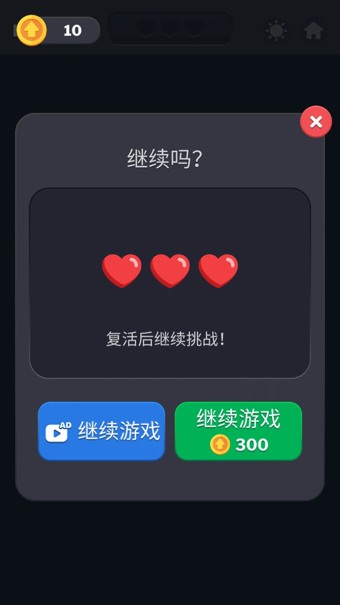
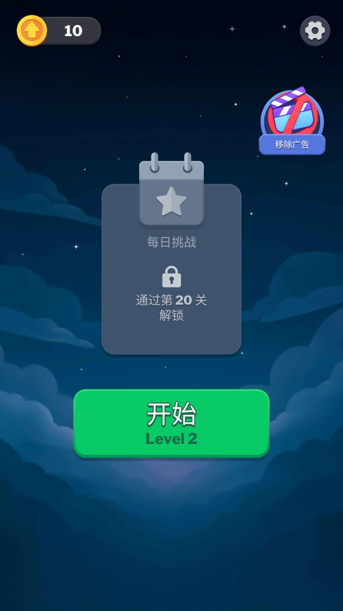
2.4 失败恢复对比
| 游戏 | 触发 | 玩家看到 | 恢复代价 | 替代方案 | 摩擦 |
|---|---|---|---|---|---|
| Amaze | 3 心打空 | 次数用尽 | 免费 +3 心 | 重新开始 | 最低 |
| Point | 3 星打空 | Out of Stars | 广告 +1 / 900 +3 / IAP | 补星后继续 | 最高 |
| Maze | 3/4/5 心打空 | 继续吗？ | 广告 / 300 金币 | 免费重开 | 中 |
判断：Amaze 把失败留在“愿意再试一次”的范围；Point 把失败做成“补资源才能继续”；Maze 想收费，但它给出的价格和免费替代方案冲突。失败点的位置也不同：Maze 在 L2 就出现，Amaze 在 L5，Point 则在任意 0 星时刻。
03 道具与经济：谁在为“继续玩”付费
IAA 的广告不是孤立存在的。它和道具价格、金币产出、复活成本一起，决定玩家是“看个广告继续”还是“直接退出”。三款产品给出了三种不同的账。
3.1 Point：道具价格高于全部关卡产出
Point 有四件道具：灯泡、橡皮、魔法棒、尺子。主要三件每 3 个 900/1400/1900 金币，尺子 250 金币 5 个；但到 29 关累计约 700 金币。也就是说，打完 29 关的全部金币还不够买一个 900 的三件套。
产出覆盖不了最低价的三件套，想用道具基本只能看广告或买礼包。
金币唯一出口是复活；20 关总产出仍低于一次复活的价格。
没有金币经济；提示只给信息，不直接跳过关卡。
3.2 Amaze：信息型广告
Amaze 只有一个灯泡提示，入口不起眼，需要看广告；但它高亮的是整支可点箭头，并告诉玩家“还有几支能点”。这比直接给“跳过”更保留解谜感，也让广告出现在玩家主动求助的时刻。
3.3 Maze：免费尺子，金币只用于复活
Maze 的基准线/尺子常驻免费，右上角还能切深/浅色；这是它比 Point 舒服的地方。但金币只有复活一个出口，且复活价格高于自然产出。结果是：免费能力很好用，付费出口却没人愿意点。
3.4 经济对照
| 游戏 | 主要产出 | 主要消耗 | 价格 / 产出关系 | 判断 |
|---|---|---|---|---|
| Amaze | 无金币；提示广告 | 广告时间 | 不挡进度 | 广告是资讯，不是墙 |
| Point | 到 29 关约 700 金币 | 3 个灯泡 900 / 3 个橡皮 1400 / 3 个魔法棒 1900；尺子 250 / 5；补 3 星 900 | 产出 < 最低三件套 | 玩家只能看广告或买礼包 |
| Maze | 10/关；L10 20、L20 30；20 关约 230 | 复活 300；Remove Ads | 产出 < 一次复活 | 金币出口失效 |
04 排位与留存：广告之外的“回来理由”
IAA 只解决“这一次失败要不要继续”，留存还要回答“下一关为什么回来”。三款产品都做了长期目标，但完成度不同。
| 游戏 | 长期目标 | 解锁方式 | 与 IAA 的关系 |
|---|---|---|---|
| Amaze | 青铜联赛、金箭头排位、排行榜、23h34m 倒计时 | L20 后进入 | 单关表现直接变成排位分；失败后继续有长期理由 |
| Point | 分段 Zone、3 星收集 | 按 Zone 分段推进 | 补星与 3 星目标叠加，但分段本身不改变难度 |
| Maze | 每日挑战、深浅色主题 | 通过第 20 关解锁每日挑战 | 目标不错，但解锁偏晚；复活经济与长期目标脱节 |
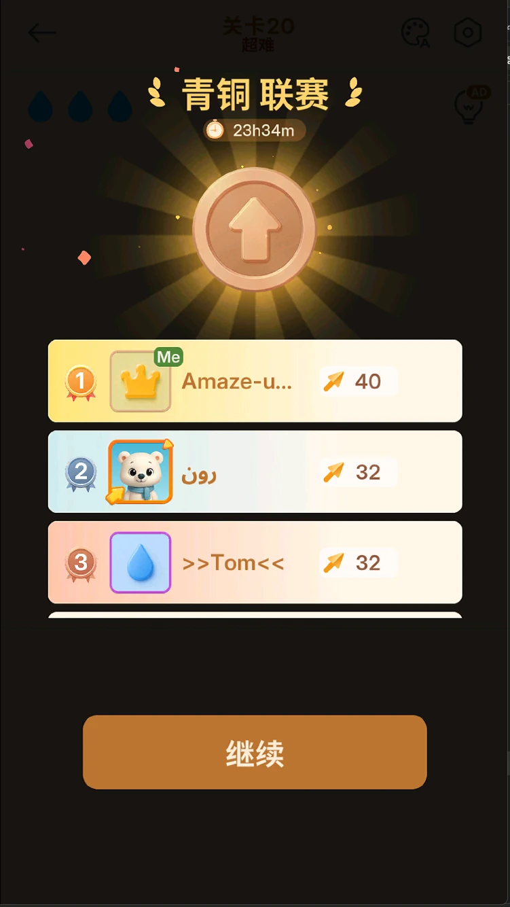
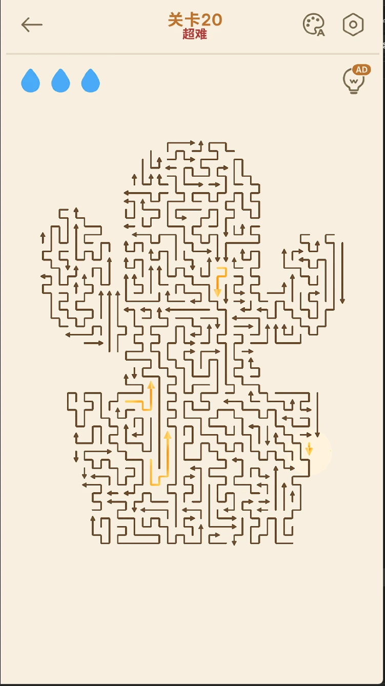
判断：Amaze 的留存结构最完整：单关失败 → 免费继续 → 通关 → 排位分 → 下一关。Point 的 3 星与 Zone 更像“完成度”，Maze 的每日挑战是好目标，但 L20 才解锁，来得太晚。
05 商店侧数据：规模、口碑与商业化口径
以下数据来自 Google Play 美国区 / 英语，2026-10-21 快照。评分、下载、评论为商店展示值；IAP 为商店页 USD 标价；数据安全为开发者申报。
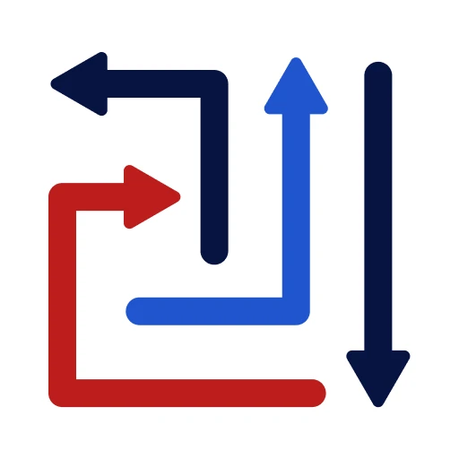
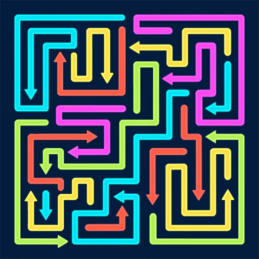
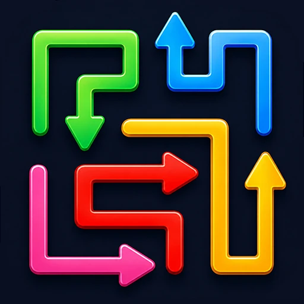
| 信息项 | Amaze GO! | Point Out | Maze Madness |
|---|---|---|---|
| 下载量 | 100M+ | 10M+ | 5M+ |
| 评分 / 评论 | 4.8 / 439K | 4.6 / 632K | 4.9 / 188K |
| 5★ 占比 | 91.1% | 75.2% | 95.8% |
| 广告 / 内购 | 含广告；商店页未标注内购 | 含广告；$1.99–$199.99 / item | 含广告；$9.99 / item |
| 版本 / 更新 | 1.34.1 / 2026-10-15 | 2.1.1 / 2026-10-09 | 2.0.1 / 2026-10-20 |
| 首次发布 | 2026-02-13 | 2025-10-10 | 2026-02-12 |
| Android | 7.1+ | 7.0+ | 9+ |
| 数据加密 | 是 | 是 | 否（商店声明） |
| 榜单 / 活动 | 美国区 #6 top free puzzle | 万圣节活动至 10/28 | 万圣节更新 |
解读：Amaze 的规模与口碑都领先，而且商店页没有标注内购，广告是它主要的商业面；Point 评论基数最大，但评分最低、IAP 跨度最大，和“补星/道具压力”对得上；Maze 评分最高，但样本最小，且是三者中唯一声明“数据不加密”的，产品侧的合规风险值得单独看。
06 评分卡：IAA 循环健康度
评分是研究判断，不是产品后台数据；5 分最好，1 分最差。重点看“压力是否可读、恢复是否合理、广告是否解决问题、经济是否自洽、留存是否接得上”。
| 维度 | Amaze GO! | Point Out | Maze Madness | 判断依据 |
|---|---|---|---|---|
| 压力可读性 | ●●●●● 5 | ●●●●● 3 | ●●●●● 3 | Amaze 困难关整板换形；Point/Maze 主要是加量。 |
| 恢复摩擦 | ●●●●● 5 | ●●●●● 2 | ●●●●● 2 | 免费继续 vs 补星墙 vs 300 金币复活。 |
| 广告相关性 | ●●●●● 5 | ●●●●● 2 | ●●●●● 2 | Amaze 是主动求助的信息广告；另两款是失败后的资源补洞。 |
| 经济自洽 | ●●●●● 4 | ●●●●● 1 | ●●●●● 1 | Amaze 没有金币墙；Point 产出<价格；Maze 产出<复活。 |
| 留存承接 | ●●●●● 5 | ●●●●● 3 | ●●●●● 4 | Amaze 排位最完整；Maze 每日挑战但解锁晚；Point 分段。 |
| 合计 | 24 / 25 | 11 / 25 | 12 / 25 | 研究判断，不是产品后台数据。 |
如果只改一处
- Point：先加误触保护。同一支错箭头只扣一次；再把补星价格降到玩家正常打 20 关能覆盖的范围。否则难度问题会直接变成付费墙。
- Maze：把复活降到 50–100，或按已清除比例动态定价。同时在按钮上写清“保留 18/24 支已清除”；230 产出对 300 单价，太尴尬。
- Amaze：保持低摩擦继续、信息型提示和排位。尤其不要把提示做成弹窗；它的价值就在“玩家主动求助”。
07 可迁移方法：IAA 什么时候不招人烦
把三款放在一起看，能提炼出六条可以直接用于关卡和商业化设计的判断。它们不依赖具体品类，适用于大多数“短局 + 失败 + 恢复”的 IAA 产品。
- 失败点放在玩家理解规则之后。Amaze 把第一次硬失败放在 L5；Maze 在 L2 就上 12 支对称十字。太早失败，玩家还没建立“我为什么会输”的模型。
- 广告只在主动求助或愿意继续的时刻出现。Amaze 的灯泡是主动点击；Point 的 Out of Stars 是失败后被拦；前者是服务，后者更像收费。
- 复活必须提供“重开给不了”的价值。Maze 的复活只保留当前进度，但关卡短、重开免费；300 金币的定价没有对应价值。
- 产出要覆盖一次恢复。Point 29 关约 700，最低三件套 900；Maze 20 关约 230，复活 300。两个账都算不过来。
- 信息型广告优于代打型广告。告诉玩家“哪支能点”仍然保留解谜；直接清屏或跳过会把关卡价值拿掉。
- 单关表现要接进长期目标。Amaze 的金箭头→排位、Maze 的每日挑战、Point 的 Zone/3 星；接得上，玩家才有下一次回来的理由。
08 证据与边界
本页的证据由三部分组成：20×3 实机截图、Google Play 商店页快照、以及对局中的资源/价格记录。所有图片来自本人实机，不使用商店图替代；商店图仅用于图标与版本信息。
| 证据 | 数量 / 来源 | 用途 |
|---|---|---|
| 关卡截图 | 60 张（Amaze / Point / Maze 各 20） | 难度标签、资源、失败/恢复画面 |
| 失败/恢复证据 | Amaze 次数用尽、Point Out of Stars、Maze 复活、Maze 主页 | 判断 IAA 触点与摩擦 |
| 商店数据 | Google Play 美区，2026-10-21 | 规模、评分、IAP、数据安全 |
| 经济记录 | Point 29 关约 700 金币；Maze 10/关、L10 20、L20 30 | 产出/价格对照 |
20 关联络表
以下为三款游戏的 20 关缩略索引（点击打开原图）。它们对应本页的难度/资源判断，不替代完整 60 张原图。
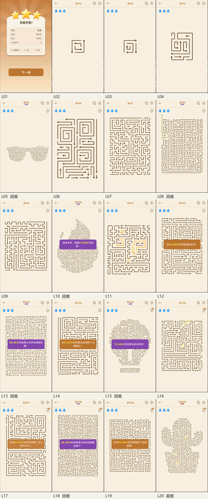
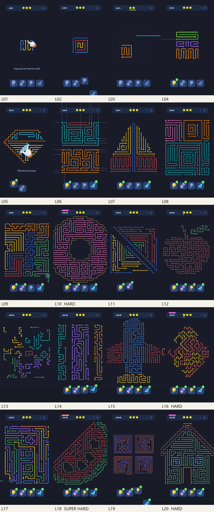
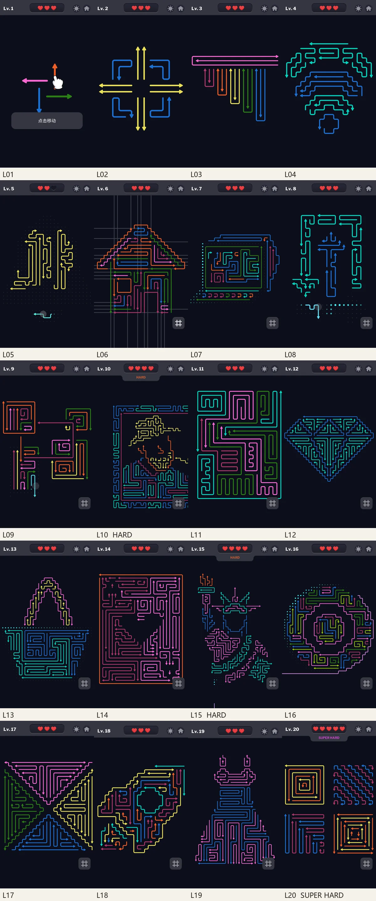
口径与限制
- 没有后台数据，广告曝光频次、eCPM、留存曲线不可见；本页只研究“玩家看到的触点与选择”。
- Amaze 使用鼠标、Point/Maze 使用触屏，手感不能逐帧等同；Maze 的误触保护未单独验证。
- Point/Maze 的金币与道具价格部分来自本人口述，能与截图对上的已在正文标注。
- Google Play 数据为美国区 / 英语快照；不同地区的评分、评论数、价格可能不同。数据安全为开发者申报，不是第三方审计。
- 本页是独立研究，不表示参与三款原游戏的制作；商标与素材归各自权利人。
来源
- Amaze GO! — Google Play：com.oakever.arrows（2026-10-21 抓取）
- Point Out: Color Escape Puzzle — Google Play：com.arrow.out（2026-10-21 抓取）
- Maze Madness - Brain Puzzle — Google Play：com.arrow.madness.games.arrows.escape.puzzle.game（2026-10-21 抓取）
- 实机截图与关卡记录：本人 2026-10-21 录制，Amaze / Point / Maze 各 20 关。